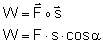
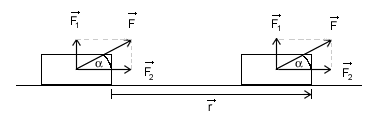
Jak widać jest to iloczyn skalarny wektora przyłożonej siły, oraz wektora przesunięcia. Jeżeli Wektor siły jest równoległy do wektora przesunięcia, czyli jest skierowany i zwrócony w zgodnie z przemieszczeniem, to cosα=1 więc wzór upraszczamy do:
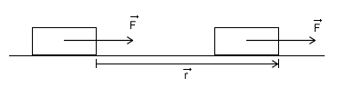
Jednostką pracy jest 'J' dżul:
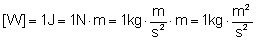
Zastanówmy się co jak to jest z tą pracą kiedy tragarz dźwigający duży ciężar przenosi go z jednego pomieszczenia do drugiego. Załóżmy, że porusza się ruchem jednostajnym prostoliniowym. Działa on siłą na ciężar skierowaną pionowo do góry, która równoważy ciężar noszonego ciała. Do pokoju zmierza ruchem jednostajnym (zakładamy, że porusza się bez oporów), więc nie działa żadną inną siłą poza tą którą podtrzymuje ciężar. Porusza się on poziomo a siła jest skierowana pionowo do góry. Kąt między wektorem siły a wektorem przesunięcia równy jest 90º. Zatem praca jaką wykonał wynosi:
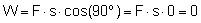
Zatem pod względem fizycznym tragarz nie wykonuje pracy. Wniosek z tego taki, że dobrze jest być tragarzem. To taki zawód, w którym się nie pracuje.
Energia mechaniczna
Energia jest taką wielkością, która mówi nam czy i ile ciało może wykonać pracy. Jeżeli ciało A ma określoną energię to może przekazać część lub całość tej energii ciału B. Mówimy wtedy że ciało A wykonuje pracę nad ciałem B. Wówczas energia ciała A zmniejsza się, a energia ciała B rośnie. Niezależnie czy ciało B miało przedtem jakąś energię mechaniczną czy nie zawsze możemy tę energię zwiększyć. Ale jeżeli ciało A nie posiada energii to nie może ona wykonywać pracy nad innym ciałem.
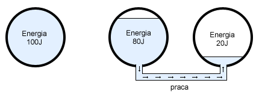
|
Jednostką energii także jest dżul, a związek między pracą i energią przedstawia taka zależność:
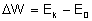 gdzie Ek to energia końcowa, a E0 to energia początkowa.
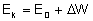
Jeżeli ciało posiada energii w ilości E=5J i wykonamy nad nim pracę W=3J, to po wykonaniu tej pracy energia będzie wynosić E=8J.
Moc
Przez moc w fizyce określamy wielkość która mówi nam ile pracy zostało wykonane w jednostce czasu. Moc jest zdefiniowana wzorem:
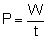
Jednostką mocy jest W (Wat). 1 wat to moc urządzenia która wykonuje pracę jednego dżula w ciągu jednej sekundy. Praca jednego dżula to np. podniesienie przedmiotu o wadze 100g na wysokość jednego metra. Jeżeli ten przedmiot podniesiemy w czasie jednej sekundy to mówimy, że nasza moc wynosi 1 Wat.
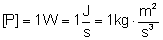
Energia kinetyczna
Ten rodzaj energii mechanicznej ma każde ciało, które jest w ruchu. Jak wiemy energia jest równa pracy wykonanej na danym ciele. Więc jeżeli ciało znajdujące się w spoczynku, które nie posiada energii kinetycznej poddane zostanie pracy, w wyniku której będzie poruszać się z daną prędkością, to energia kinetyczna będzie równa tej wykonanej pracy.
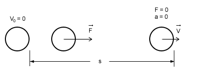
Niech ciało A znajduje się w spoczynku. Następnie zadziałajmy na to ciało siłą F i zgodnie z drugą zasadą dynamiki nadamy mu przyśpieszenie a. Kiedy ciało osiągnie prędkość V siła przestaje działać i ciało porusza się z tą prędkością ruchem jednostajnym prostoliniowym. Siła F wykonała nad ciałem A pracę równą W=F·s , gdzie s jest drogą przebytą przez ciało do momentu osiągnięcia prędkości V. Przekształćmy ten wzór:
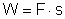
Najpierw podstawmy za F, a następnie za a:
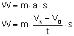 podstawmy też za s:
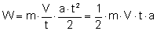
ponownie podstawmy za a:
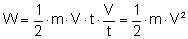
Wiemy, że energia kinetyczna ciała jest równa pracy wykonanej na tym ciele otrzymujemy ostatecznie:
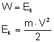
Za pomocą tego wzoru będziemy mogli wyliczać energię kinetyczną ciała o masie m, poruszającego się z prędkością V.
Energia potencjalna grawitacji
Ten rodzaj energii mechanicznej mają ciała, które znajdują się na pewnej wysokości. I tu pojawia się problem z określeniem miejsca od którego liczymy tę wysokość.
Załóżmy że znajdujemy się w bloku w oknie na czwartym piętrze i "przez przypadek" wypadają nam dwie doniczki przez okno. Oznaczmy je odpowiednio A i B. Nasz sąsiad mieszkający pod nami (trzecie piętro) w złym momencie wyjrzał przez okno i jego głowa znalazła się na drodze doniczki A. Nasz drugi sąsiad także znalazł się w złym miejscu o niewłaściwej porze bo akurat spacerował po chodniku i "spotkał się" z doniczką B. Zastanówmy się czy obaj odczuli te spotkania tak samo? Która doniczka spowodowała większe szkody? Czy A, która przeleciała jedno piętro, czy B która przeleciała przez 4 piętra.
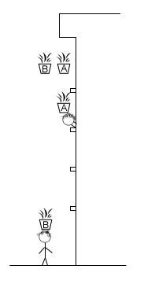
Pomyślmy przez chwilę o energii potencjalnej grawitacji doniczek przed wypadkiem. Mimo iż obie doniczki znajdowały się na czwartym piętrze, to łatwo się domyśleć, że ich energia potencjalna względem sąsiada mieszkającego pod nami była troszkę mniejsza niż względem tego który szedł po chodniku. Dlatego jeżeli mówimy, o energii potencjalnej grawitacji ciała to musimy sami wybrać względem którego poziomu liczymy wysokość na jakiej znajduje się to ciało. Najczęściej takim poziomem jest powierzchnia ziemi, lub np. podłoga w naszym pokoju, rzadziej głowa naszego sąsiada.
Spróbujmy teraz wyprowadzić wzór na energię potencjalną grawitacji ciała znajdującego się na wysokości h.
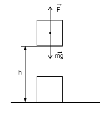
Postąpimy jak z energią kinetyczną, czyli obliczymy pracę potrzebną na wyniesienie ciała na wysokość h. Jeżeli wynosimy to ciało ruchem jednostajnym prostoliniowym to musimy zadziałać siłą F, która zrównoważy ciężar. Siła ta będzie równa co do wartości ciężarowi ciała, czyli:
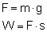
Droga w tym przypadku jaką musi przebyć ciało wynosi h. Zmieńmy więc nasz wzór:
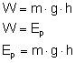
Energia potencjalna sprężystości
Ten rodzaj energii mechanicznej posiadają takie ciała jak rozciągnięta sprężyna. By wyprowadzić wzór na energię potencjalną sprężystości (Eps), także w tym przypadku musimy obliczyć pracę potrzebną na rozciągnięcie sprężyny. Jak zwykle wychodzimy z podstawowego wzoru:
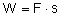
Symbol drogi s zastąpmy symbolem zmiany długości sprężyny Δx. Jest to różnica długości sprężyny po wykonaniu pracy i długości sprężyny przed wykonaniem pracy nad tą sprężyną.
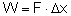
Zastanówmy się czym zastąpić symbol siły? Jeżeli rozciągamy sprężynę o 10 cm, to w każdym momencie rozciągania musimy działać inną siłą. Musimy więc wyliczyć średnią siłę jaką działamy na sprężynę. Znając własności sprężyn wiemy, że siła z jaką musimy działać by zrównoważyć siłę sprężyny jest wprost proporcjonalna do odkształcenia. Zatem średnia siła będzie średnią arytmetyczną siły używanej na początku rozciągania i tej używanej kiedy rozciąganie kończymy:
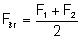
Siła F1, jest równa liczbowo sile sprężyny z jaką dąży ona do stanu nierozciągniętego w momencie kiedy zaczynamy wykonywać nad nią pracę. Siła F2 to siła którą działa sprężyna po wykonaniu nad nią pracy. Musimy jednak znać wzór jakim wyrażają się te siły. Wzory na te siły możemy zapisać następująco:
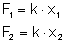
gdzie k to współczynnik sprężystości danej sprężyny, a x1 i x2 to długość wychylenia sprężyny od stanu nierozciągniętego.
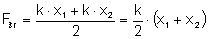
Teraz możemy już obliczyć pracę potrzebną na rozciągnięcie sprężyny o współczynniku sprężystości równym k o długość Δx, gdzie Δx=x2-x1:
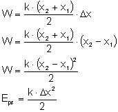
Zasada zachowania energii
Jak wiemy, jeżeli jakieś ciała posiadają energię to mogą wykonywać pracę nad innymi ciałami i tę energię im przekazywać. Wszystkie te ciała, które tworzą jakiś układ, mają jakąś jedną sumę wszystkich swoich energii. Zasada zachowania energii mówi nam, że jeżeli na te ciała nie działają, żadne siły, z poza tego układu, czyli jeżeli układ jest zamknięty (odosobniony), to całkowita suma wszystkich energii tych ciał jest stała. Jest to bardzo ważna zasada, która jest zachowana nie tylko w warunkach mechaniki klasycznej, ale też stosowana w mechanice kwantowej i relatywistycznej.
W praktyce nie jest możliwe spotkanie takiego układu odosobnionego, bo np. tarcie powoduje zamianę energii mechanicznej na ciepło, które jest rozpraszane. Ale dla warunków, gdzie tarcie ma małe znaczenie możemy śmiało stosować tę zasadę, gdyż wyniki obliczeń przy jej stosowane są bardzo zbliżone z rzeczywistością, a ona sama bardzo ułatwia pewne obliczenia i zrozumienie wielu problemów.
Przykładem zastosowania naszej zasady zachowania energii, może stać się "doświadczenie" z doniczkami. Doniczki znajdujące się na czwartym piętrze mają względem głowy spacerującego sąsiada energię potencjalną, nie mają natomiast energii kinetycznej bo się nie poruszają. Ta energia jest jej całkowitą energią mechaniczną. Kiedy ta doniczka spada, posiada ona już jakąś energię kinetyczną (spada z jakąś prędkością), ale nadal posiada część energii potencjalnej (nadal znajduje się na pewnej wysokości nad sąsiadem). Według zasady zachowania energii, energia całkowita nie uległa zmianie więc: Ec=Ek+Ep. Kiedy natomiast doniczka znajduje się już na końcu swojej drogi, nie ma już energii potencjalnej, bo ta zamieniła się w całości na energię kinetyczną. Całkowitą energią mechaniczną jest energia kinetyczna.
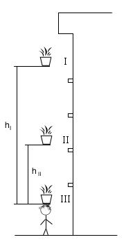
Podzielmy to "doświadczenie" na trzy etapy:
I - kiedy doniczka jest na 4 piętrze i zaczyna spadać;
II - kiedy doniczka już leci i znajduje się między 4 piętrem a przechodniem;
III - kiedy doniczka uderza w przechodnia.
W części pierwszej:
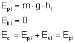
W części drugiej:
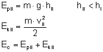
I w trzeciej części:
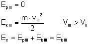
Jeżeli chodzi o energię całkowitą (czyli sumę wszystkich energii mechanicznych - energię potencjalną sprężystości pomijamy, bo doniczka nie jest sprężyną) to nie oznaczałem jej inaczej w każdym etapie, bo cały czas jest stała.